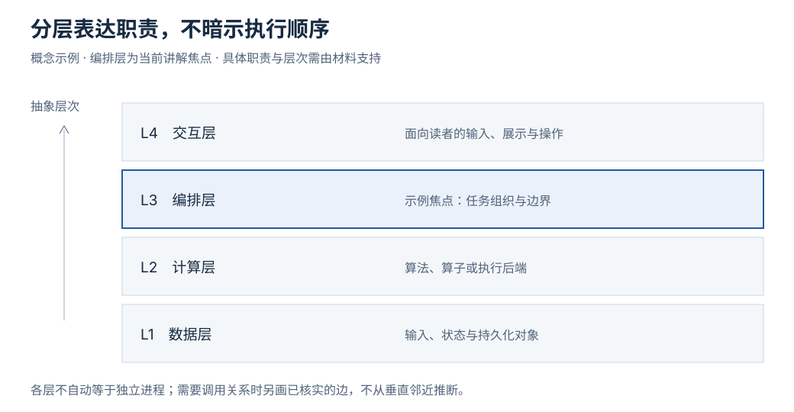
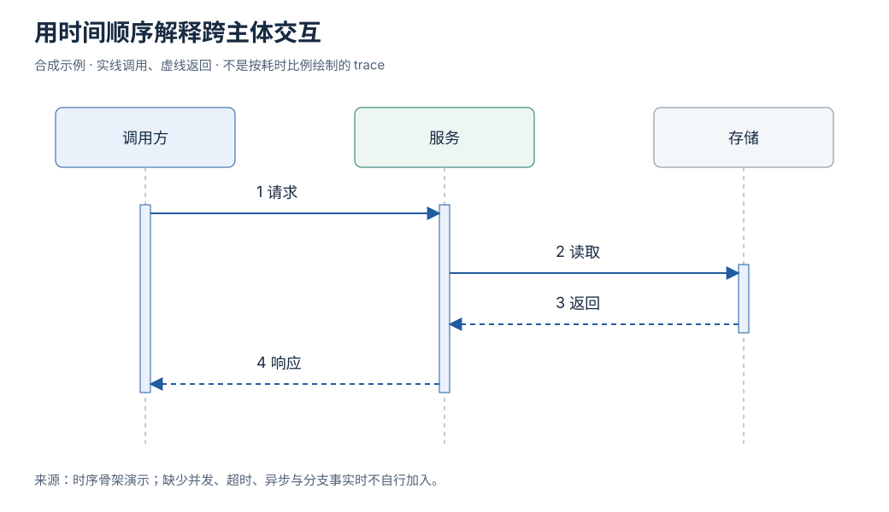

A / STRUCTURE
结构图回答“是什么”
用分层说明职责。若需要表达真实调用关系，在核对材料后另画边，不由相邻位置推断。
图内可横向滚动查看完整文字。

B / INTERACTION
时序图回答“怎么发生”
图内可横向滚动。

C / EVIDENCE
保留解释边界
- 每个模块与关键关系对应真实材料中的定位。
- 已知、推断与未知分别表达，不用一条虚线统称。
- 动态播放节奏是讲解，不是系统运行监控。
MODEL THE RELATIONSHIP
构图与图形均为示例，不是已核实的技术方案。